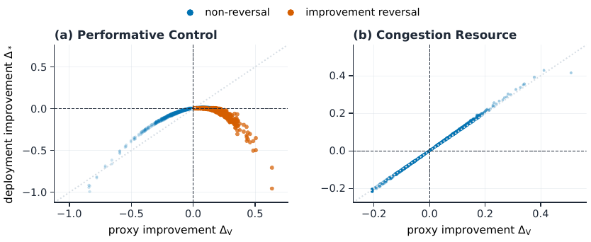
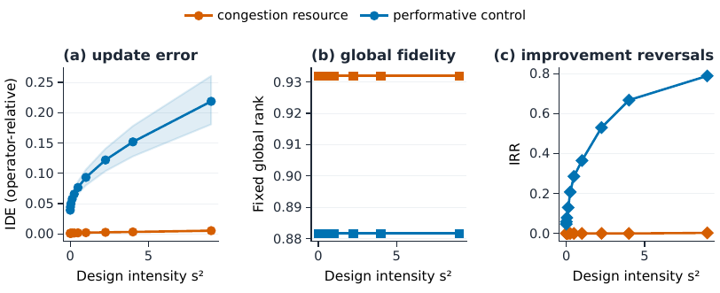
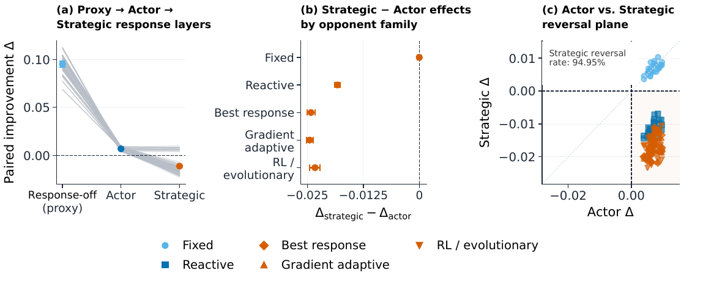

TL;DR — un vérifieur peut être exact sur les politiques et pourtant choisir la mauvaise mise à jour, parce que (i) l'opérateur d'amélioration concentre les propositions sur une sous-population où le vérifieur se trompe (operator shift) et (ii) déployer un candidat change le monde dans lequel on l'évalue (deployment response) ; les auteurs formalisent l'écart comme Improvement Fidelity, montrent que les erreurs ne comptent que relativement à la marge entre candidats, et proposent PIVOT-KG, une règle knowledge-gradient qui dépense un budget d'évaluation haute-fidélité (HF) là où il peut changer la décision de remplacement.
Claim principal, formulé précisément : 1. Formel — il existe une famille de politiques + un vérifieur + un opérateur tels que MAE de politique et erreur de rang Spearman soient < ε arbitraire, mais IRR = 1 et ISC = 0 sur la loi de transition induite par l'opérateur [Prop. 2, §4]. L'exactitude globale ne borne donc pas la fidélité au niveau des updates. 2. Empirique (diagnostic) — sur 90 racines held-out (30 Leduc + 30 Kuhn + 30 Melting Pot), les ensembles optimaux proxy et déploiement sont disjoints dans 51 cas [§6.3, App. B]. 3. Empirique (méthode) — dans un stress test HighwayEnv à 8 candidats, PIVOT-KG fait passer l'ISR moyen de 0.0435 (règle Uniform exacte) à 0.0055 au budget primaire B=4, soit +0.0380 [0.0300, 0.0474] [Tab. 3, App. C].
⚠️ Le claim 3 est le seul réglage HighwayEnv où la comparaison au budget primaire se résout positivement (détail en 7.0), et le claim 2 est un diagnostic de désaccord, pas une démonstration que PIVOT-KG le répare.
Pas de « tâches » au sens LLM : l'unité est une racine de décision = (incumbent π, panel de K updates candidats {π'_j}, option no-update j=0) [§3, §6.1].
Origine des tâches. - Chaque racine held-out a « a fixed panel of candidate policy updates generated by its improvement operator » [§6.1] — donc générées par un opérateur d'amélioration, pas par des humains. ⚠️ La nature exacte de cet opérateur n'est jamais spécifiée (ni dans le corps, ni en annexe) : on sait seulement que le repère de rang global est une « zero-shift evolutionary-policy reference » [App. A]. Pas de description des mutations/updates proposés. - HighwayEnv redesign : 8 candidats « scheduled », construits en croisant 4 actions non-idle × 2 fenêtres (early / late half-horizon) [§6.5, App. C]. Cohortes HighwayEnv original/replication : panel de 5 actions [App. C]. - Melting Pot : 8 specialist mixtures sur un seul substrat stag-hunt répété [App. B]. - Poker : « nine queryable entries include an incumbent copy » [App. B] — donc 8 candidats + une copie de l'incumbent comme contrôle. - MetaDrive : 12 profils, une seule géométrie de goulot fixe [App. C].
Pipeline de construction (reconstruit depuis §5, §6.1, App. B/C) : 1. Fixer des slots d'update identiques entre racines de calibration et de test (« candidate coordinates follow the same fixed update slots across calibration and test roots » [App. B]). 2. Sur le set de calibration (disjoint), collecter des paires (proxy, HF) de transitions → estimer la loi a priori de la correction G = Δ_ − Δ_V : μ, Σ_G, et les variances d'observation s_j² (« estimated and regularized from calibration data ») [§5]. 3. Sur chaque racine de test*, partir de cette croyance calibrée sans utiliser ses résultats HF [§5]. 4. Évaluer le proxy pour tous les candidats, puis allouer B requêtes HF.
Volumes (tous en racines, pas en tokens) :
| Cohorte | Calibration | Test | K | Budget primaire |
|---|---|---|---|---|
| Poker / Melting Pot (premières cohortes) | 12 racines | 30 racines/env | 8 (+copie incumbent) | B=2 requêtes |
| HighwayEnv original | 20 | 60 | 5 | B=2 |
| HighwayEnv replication (seeds frais) | 20 | 60 | 5 | B=2 |
| HighwayEnv redesign | 40 | 120 | 8 | B=4 |
| MetaDrive | non précisé | 30 | 12 profils | B=2 |
| Études contrôlées | — | 30 seeds appariés (CRN) | 4 (Congestion) | 2 requêtes |
Contraste operator-shift : intervalle rééchantillonnant 450 cellules condition/seed partageant 30 seeds ; les bandes de figure rééchantillonnent 6 moyennes de condition [App. A].
Distribution de difficulté. Pas de notion de difficulté ; le substitut est la marge entre candidats et le ratio correction/marge [§6.3, App. B]. Sur les 90 racines : 51 à optima disjoints, 39 stables, et 28 racines ont des optima ex æquo [App. B] — proportion élevée de racines dégénérées, jamais discutée.
Filtrage. Aucun filtrage par pass@k ou par modèle (pas de LLM). Tolérance d'égalité 1e-12, plancher de marge 1e-12, plancher de variance-modèle 0.25 pour le poker [App. B].
Curriculum. Aucun : budget fixe, chaque candidat interrogé au plus une fois [Alg. 1]. Variante Leduc de confirmation : requêtes (j, n) avec n ∈ {512, 2048, 4096} mains, candidats répétés autorisés, coût 2n [App. B].
Contamination / séparation train-test. - Calibration et test disjoints par construction, cohortes HighwayEnv sans recouvrement [App. C]. - ❌ Mais deux fuites déclarées : « A technical smoke run exposed two replication roots; they are retained without subsequent tuning or exclusion » et, pour le redesign à 8 candidats, « Two test roots were exposed during technical smoke and are retained without retuning or exclusion » [App. C]. Honnête, mais c'est une exposition de test set sur la cohorte qui porte le résultat phare. - ⚠️ Design après résultats : la seconde cohorte Leduc « was designed after the first-cohort results, with fresh confirmation roots. This cohort is a mechanism confirmation study rather than a direct replication » [App. B] ; et « Earlier HighwayEnv cohorts were unresolved at their primary budgets » avant le redesign à 8 candidats [§6.5]. Trois designs HighwayEnv successifs, le troisième est celui de l'abstract.
Données SFT/IFT. Sans objet (pas de LLM).
Coût humain. Aucune annotation humaine. La « haute fidélité » est un rollout simulé apparié, pas un jugement humain [§6.1]. C'est la limite centrale pour le transfert (voir §9).
Le « harness » ici n'est pas un harness d'agent mais un harness de validation : l'agent décisionnel est le validateur, pas la politique.
Observation à chaque tour [§5, Alg. 1] : - le vecteur de gains proxy {Δ_V,j}_{j=1..K} (toujours disponible, coût négligeable) ; - la croyance a posteriori courante sur la correction G ~ N(μ, Σ_G), conditionnée par les requêtes déjà faites ; - les coûts {c_j} et le budget restant b.
Espace d'actions : choisir un candidat non encore interrogé j ∈ C \ S avec c_j ≤ b, ou s'arrêter. Pas d'outils, pas de langage. Score d'acquisition :
A_j = EVSI_j / c_j, avec EVSI_j = R(D) − E_{Y_j|D}[R(D ∪ {(j,Y_j)})] et R(D) = E[max_{j∈C+} Δ_*,j − Δ_*,a(D) | D] [Éq. 4, §5]. Décision finale a(D) = argmax_{j∈C+} E[Δ_*,j | D], l'option no-update j=0 ayant Δ_V,0 = Δ_*,0 = 0 [§3].
Multi-turn / horizon : séquentiel, horizon = B requêtes (B ∈ {1,2,4} ; B = 16 384 mains dans la variante Leduc). Chaque candidat au plus une fois dans la procédure primaire [Alg. 1]. Pas de contexte long à gérer : l'« état » est un posterior gaussien de dimension K.
Exécution : - Simulateurs : OpenSpiel (Kuhn, Leduc) [lanctot2019openspiel], Melting Pot [leibo2021meltingpot], MPE2 gelé [lowe2017maddpg], HighwayEnv [highwayenv2018], MetaDrive [li2022metadrive] + 2 fixtures maison (Performative Control, Congestion Resource). - Déterminisme / appariement : c'est le cœur du harness. « The incumbent and candidate are evaluated under matched initial state, exogenous randomness, and opponent initialization » [§5] ; études contrôlées en common-random-number (CRN) sur 30 seeds [§6.1]. Justification théorique : « positive incumbent–candidate covariance reduces the variance of their paired difference relative to independent evaluation with the same marginal variances » [§4]. - Une requête HF = « one prescribed paired candidate evaluation under matched randomness » [§6.1] ; dans HighwayEnv, « each PIVOT query corresponds to a paired actor rollout in the reactive simulator » [§6.5]. - Timeouts, reset, parallélisme : non précisé.
Niveaux de réponse au déploiement — la structure d'évaluation la plus réutilisable du papier [§3] :
- Δ_direct = J(π'; M[π]) − J(π; M[π]) — monde de l'incumbent gelé ;
- Δ_actor = J(π'; M[π']) − J(π; M[π]) — l'environnement répond au candidat ;
- Δ_strategic = J_i(π', R_{−i}(π')) − J_i(π, R_{−i}(π)) — les autres agents s'adaptent via une response map R_{−i} (best response = cas particulier).
Hors adaptation d'autrui, Δ_actor = Δ_. L'écart actor − direct = J(π'; M[π']) − J(π'; M[π]) isole exactement l'effet du monde induit par le candidat [§4].
⚠️ Attention : la figure d'annexe utilise un quatrième* niveau, « response-disabled proxy », explicitement distinct de Δ_direct (« Figure~\ref{fig:layers}'s proxy disables response, unlike the fixed-incumbent-world Δ_direct » [App. A]) — la nomenclature n'est pas stable entre corps et annexe.
Gestion des erreurs : sans objet (pas de sorties mal formées). Régularisation numérique à la place : plancher de variance 0.25, tolérance d'égalité 1e-12, bruit d'observation « regularized from calibration data » [§5, App. B].
Exemple de trajectoire : aucun donné dans le papier. Pseudo-code Alg. 1 seulement.
Le papier est un papier sur le vérifieur : il distingue trois objets qu'on confond d'ordinaire.
Type.
- J_V(π) — le proxy : vérifieur bon marché, fixe, externe. Explicitement pas un juge auto-écrit : « the verifier need not be self-authored, changing, or directly exploited. Even a fixed external verifier can select the wrong update » [§2]. Dans les expériences, le proxy est une évaluation response-disabled ou en monde incumbent gelé.
- J(π; M[π]) — la vérité de déploiement : rollout simulé dans le monde induit, avec réponse de l'environnement et/ou des autres agents. Exécution de simulateur, pas de juge LLM, pas de rubrique, pas de reward model.
- Y_j = Δ_*,j + η_j, η_j ~ N(0, s_j²) — l'observation HF, estimateur bruité de la vérité [§5].
Granularité. Outcome, au niveau transition (et non politique) :
- IDE = E_{Q_A}[|Δ_V − Δ_*|] — magnitude d'erreur (instance L1 de l'Éq. 2) ;
- ISC = Pr(sgn Δ_V = sgn Δ_* | Δ_V·Δ_* ≠ 0) — accord de signe, égalités retirées ;
- IRR = Pr(Δ_* < 0 | Δ_V > 0) — taux de retournement proxy-positif ;
- ISR(ĵ) = max_{j∈C+} Δ_*,j − Δ_*,ĵ — regret de sélection, la conséquence décisionnelle [Éq. 3, §3].
Le point conceptuel : l'espérance est prise sous Q_A, la loi de transition induite par l'opérateur d'amélioration, « rather than the policy space in general » [§3]. C'est ça, l'« operator-relative ».
⚠️ Mesure réelle des métriques de fidélité : très lacunaire. IDE/ISC/IRR ne sont rapportés nulle part par environnement. Vérification faite sur la source : les macros LaTeX \RevisionLeducIDE (1.016), \RevisionLeducIRR (0.500), \RevisionLeducISC (0.556), les équivalents Kuhn/Melting Pot, les response gaps et les gains normalisés flipped/stable sont définis dans le préambule et n'apparaissent jamais dans le document compilé. Le papier introduit trois métriques de fidélité et n'en publie que : le contraste poolé d'IDE sous operator shift, le contraste strategic−actor, deux taux de retournement, et un contraste ISC OOD. Les résultats chiffrés portent presque tous sur l'ISR de PIVOT-KG.
Termes additionnels. Pas de bonus de format ni de pénalité de longueur. Les coûts c_j jouent ce rôle : « Positive-query costs include response search and paired evaluation » [App. C] ; dans la variante Leduc, le coût est 2n mains [App. B].
Fiabilité du vérifieur — mesurée ? Oui, c'est l'objet du papier, mais indirectement :
- Prop. 1 : si sup_π |J_V(π) − J(π;M[π])| ≤ ε alors |Δ_V − Δ_*| ≤ 2ε, signe préservé si |Δ_*| > 2ε [§4]. La fidélité uniforme suffit.
- Prop. 2 : l'exactitude moyenne ne suffit pas (MAE = 2/[n(n−1)], 1−ρ_S = 12/[n(n²−1)] → 0, mais IRR = 1, ISC = 0) [§4].
- Prop. 3 (operator shift) : |E_{Q_A}[ℓ] − E_P[ℓ]| ≤ sqrt(Var_P(ℓ)·χ²(Q_A‖P)) — borne χ² du transfert d'une loi de calibration P vers la loi de l'opérateur [§4].
- Prop. 4 (préservation de décision) : avec ε_C = max_j |Δ_V,j − Δ_*,j| et marge m du vrai gagnant, ISR(ĵ_V) ≤ 2ε_C et m > 2ε_C ⟹ ĵ_V = j* [§4]. L'erreur de vérifieur ne compte que relativement à la marge.
- Taux de faux positifs mesurés : IRR → jusqu'à ~0.8 sous forte intensité de shift dans Performative Control [Fig. 2c] ; 2.5 % → 51.7 % entre réponse 1-step et 8-step en Leduc [App. A] ; taux de retournement stratégique family-balanced 0.9495 [§6.2, App. A].
- Accord avec des humains : sans objet (vérité = simulateur).
Si juge LLM : aucun juge LLM, aucun prompt, aucune rubrique. Rien à recopier.
Robustesse / attaque. Le vérifieur n'est pas attaqué par la politique — c'est le point : l'erreur de sélection apparaît sans exploitation du vérifieur, par simple décalage du monde d'évaluation. Positionné comme complémentaire de l'over-optimisation de reward [gao2023reward] et des proxies corrélés [laidlaw2025correlated] [§2]. ⚠️ Pas de test adverse où un opérateur chercherait activement les updates que le proxy sur-note : l'operator shift est conçu (axe « design intensity s² », explicitement « not a measured χ² divergence » [Fig. 2]), pas appris.
Pas de RL : PIVOT-KG est une règle d'allocation d'évaluation, l'« optimisation » est bayésienne/knowledge-gradient.
Algorithme [§5, Alg. 1] : modèle gaussien de travail calibré sur la correction, G ~ N(μ, Σ_G) et Δ_* | Δ_V ~ N(Δ_V + μ, Σ_G) ; conditionnement gaussien à chaque requête ; Σ_G non diagonale, donc une requête met à jour les candidats corrélés non interrogés ; acquisition = EVSI/coût ; sélection finale sur le posterior. Instanciation du knowledge-gradient à croyances normales corrélées [frazier2009kg] appliquée à la validation proxy↔déploiement.
Différences revendiquées vs standard : (i) la cible est la correction G plutôt que la valeur, (ii) les observations sont appariées (CRN) plutôt qu'indépendantes, (iii) l'ensemble de décision inclut le no-update.
Hyperparamètres : budgets B ∈ {1, 2, 4} requêtes (16 384 mains en Leduc confirmation) ; μ, Σ_G, s_j² estimés sur la calibration ; plancher de variance poker 0.25 ; tolérance 1e-12 ; bootstrap apparié par racine, 10 000 tirages (MetaDrive) [App. C] ; Uniform = moyenne exacte sur tous les sous-ensembles (70 pour C(8,4), 28 pour C(8,2)) [App. C]. Pas de KL, pas de clipping, pas de température — sans objet.
Stabilité. Pas d'instabilité d'entraînement. Deux fragilités déclarées : (i) « PIVOT-KG relies on a calibrated correction model and sufficiently informative HF observations; when evidence is too noisy or budgets are too small, decision-critical uncertainty can remain unresolved » [§7] ; (ii) les intervalles held-out conditionnent sur le modèle de calibration ajusté et ne propagent pas l'incertitude d'échantillonnage de la calibration [§7] — les CI sont donc optimistes d'une quantité non quantifiée.
Diagnostics « legacy » distincts de l'Alg. 1 (sélecteurs batch, Fig. 4/8/9) : pas de ré-acquisition intra-batch, les valeurs observées remplacent les estimés interrogés, les estimés non interrogés peuvent omettre des observations ultérieures [App. B]. ⚠️ Le papier empile donc 3 procédures (batch legacy, Alg. 1 à budget fixe, variante à requêtes répétées) — lisibilité des contrastes réduite.
Compute. Aucune heure GPU/TPU, aucune durée : non précisé. Seuls coûts rapportés en requêtes/mains/rollouts.
Dynamique. Pas de courbe de reward ni d'entropie. Équivalent : le closed-loop legacy sur 40 rounds, 30 seeds, contraste CISR Proxy-Only − PIVOT-batch = 1.4883 [1.0618, 1.9105] sous remplacement forcé [§6.4].
Pas de reward hacking par la politique (pas d'apprentissage adverse contre le vérifieur). Les échecs documentés sont des échecs de sélection et de la méthode elle-même — le papier est inhabituellement transparent là-dessus.
| Comportement | Détection | Correction |
|---|---|---|
| Retournement d'amélioration : Δ_V > 0, Δ_* < 0 | IRR sur les candidats proxy-positifs ; Fig. 1 (nuage en bas à droite) | Évaluer dans le monde induit (niveau actor/strategic) ; dépenser du HF |
| Exactitude globale trompeuse : rang Spearman global plat (0.882 / 0.932) pendant qu'IDE et IRR explosent | Fig. 2 (a) vs (b) vs (c) | Mesurer la fidélité sous Q_A, pas sur l'espace des politiques |
| Retournement par horizon de réponse : IRR 2.5 % (1 step) → 51.7 % (8 steps) en Leduc | Fig. annexe « Leduc response-horizon » [App. A] | Allonger l'horizon de réponse dans l'évaluation HF |
| Retournement stratégique : proxy response-off ≈ +0.10 → actor ≈ +0.007 → strategic ≈ −0.012 ; taux 94.95 % | Fig. « response footprint » [App. A] | Inclure la response map R_{−i} ; adversaires adaptatifs (best response, gradient adaptive, RL/evolutionary) |
| Ciblage réussi ≠ résolution : PIVOT touche la paire décisive ex-post dans 0.97 [0.92, 1.00] des racines, mais l'écart-type d'observation supposé par le modèle vaut 13.99× [7.97, 22.90] la marge proxy top-2 | Diagnostic §6.3 ; gain normalisé 0.113 [0.055, 0.180] sur 87 racines « hit » vs −0.195 [−0.584, 0.000] sur les 3 « miss » [App. B] | Aucune — les auteurs écrivent « targeting alone need not resolve ordering » [§6.3] |
| PIVOT-KG nuit : Melting Pot short B=5, Uniform − PIVOT = −0.575 [−1.042, −0.180] (CI exclut 0) [Tab. 2] ; HighwayEnv original B=1, −0.0226 [−0.0439, −0.0008] [Tab. 3] | Comparaisons secondaires | Non corrigé ; déclaré comme hétérogénéité attendue (« deployment response alone does not determine the value of targeted validation » [§6.4]) |
| Artefact de métrique : le closed-loop legacy force le remplacement et rapporte CISR_C sans no-update, donc « negative improvement with zero regret is then possible » [App. B] | Auto-déclaré | Le papier bascule sur C+ (avec no-update) pour les résultats primaires |
| Apprenant spécialisé pire OOD : contraste ISC transition-minus-global = −0.2590 [−0.3588, −0.1707] | « Evaluator boundary », App. C | Les auteurs en tirent que Improvement Fidelity « defines an evaluation target, not a preferred learner architecture » |
Comportement émergent inattendu : le sens du gain peut s'inverser en ajoutant des couches de réponse (positif → ~nul → négatif), monotone sur les trois niveaux [App. A, Fig. response footprint]. Autrement dit, « un peu » de modélisation de réponse peut être pire que rien : la valeur apparente se vide avant de changer de signe.
⚠️ Mon évaluation : la liste est crédible et auto-critique ; ce qui manque, c'est l'échec qui compte pour un LLM — un opérateur qui cherche les points où le proxy se trompe. Ici l'operator shift est un paramètre de design (s²), pas une pression d'optimisation. Le papier décrit donc une erreur statistique de sélection, pas une erreur adversariale.
\RevisionLeducCostShare (0.22) et \RevisionVFourCostShare (0.29) définies mais jamais affichées → à considérer comme absentes.| Chiffre annoncé | Où il est annoncé | Source dans le papier | Verdict |
|---|---|---|---|
| « 90 held-out roots in Leduc, Kuhn, and Melting Pot » | abstract | §6.1 (« 30 roots in each environment ») ; Fig. 3a | confirmé |
| « proxy and deployment optimal sets are disjoint in 51 cases » | abstract, §6.3 | App. B : 18 Leduc + 14 Kuhn + 19 Melting Pot = 51 ; Fig. 3a (fractions ≈ 0.60 / 0.47 / 0.63) | confirmé (mais App. B ajoute « 28 roots have tied optima », non mentionné dans l'abstract) |
| « eight-candidate HighwayEnv stress test » | abstract | §6.5 + App. C : 4 actions non-idle × 2 fenêtres | confirmé |
| « PIVOT-KG reduces mean ISR from 0.0435 under the exact Uniform validation rule to 0.0055 at the primary budget » | abstract | Tab. 3, ligne « Redesign (8), B=4 » : 0.0435 → 0.0055, contraste 0.0380 [0.0300, 0.0474] | confirmé sur le chiffre — sur-généralisé comme résultat HighwayEnv : dans la même Tab. 3, la cohorte Original à son budget primaire B=2 donne +0.0049 [−0.0088, 0.0199] (non résolu), la Replication B=2 −0.0006 [−0.0143, 0.0145] (non résolu), et Original B=1 −0.0226 [−0.0439, −0.0008] (PIVOT significativement pire). Le réglage retenu dans l'abstract est le 3ᵉ design, conçu après que « earlier HighwayEnv cohorts were unresolved at their primary budgets » [§6.5] |
| « providing a practical rule for allocating scarce deployment evidence » (implicite : ça marche) | abstract, §1 | Tab. 1 : Leduc 0.036 [0.014, 0.064] ✔ ; Kuhn 0.002 [0.000, 0.006] (effet ~0, CI touche 0) ; Melting Pot 0.906 [−0.784, 3.401] non résolu. App. B : « only Leduc meets the joint primary/interaction criterion » | sur-généralisé : 1 monde sur 3 au critère conjoint. Le corps le dit explicitement, l'abstract non |
| « operator shift and deployment response can create update-level errors » | abstract, §1 | Prop. 2–3 [§4] ; contraste IDE poolé high−low 0.2627 [0.1684, 0.3763] [§6.2] | confirmé sur le poolé — ⚠️ sur-généralisé sur la portée : la Fig. 2 montre Congestion Resource à IDE ≈ 0.005 et IRR = 0 à toutes les intensités, l'effet vient de Performative Control (IRR → ~0.8). Le pool est pondéré 0.4 / 0.4 / 0.2 (PC / CR / MPE2 gelé) [App. A] |
| « global policy accuracy need not guarantee update fidelity » | abstract | Prop. 2 (construction explicite) [§4] ; Fig. 2b (rang global plat) | confirmé pour la proposition ; ⚠️ côté empirique le « rang global » est « a fixed zero-shift evolutionary-policy reference » [App. A], c'est-à-dire une constante de calibration par construction, pas une mesure indépendante |
| Taux de retournement 2.5 % → 51.7 % selon l'horizon de réponse | §6.2 | App. A + figure dédiée (barres 2.5 % / 51.7 %, CI root-bootstrap) | confirmé (cohorte Leduc de confirmation, pas la cohorte primaire) |
| Contraste strategic − actor −0.0240 [−0.0249, −0.0231], taux de retournement stratégique 0.9495 | §6.2 | App. A, Fig. response footprint (94.95 % affiché) | confirmé |
| Contraste ISC transition − global OOD −0.2590 [−0.3588, −0.1707] | App. C | « Full ISC and IDE comparisons are reported in the supplement » | introuvable dans le papier (renvoi au supplément non fourni) |
| IDE / ISC / IRR par environnement | nulle part | macros \RevisionLeducIDE etc. définies dans le préambule, jamais utilisées |
introuvable (métriques introduites puis non rapportées) |
Chiffres clés.
| Comparaison | Env / réglage | Uniform ISR | PIVOT-KG ISR | Uniform − PIVOT [95 % CI] | Source |
|---|---|---|---|---|---|
| Primaire, B=2 | Leduc, long | 0.046 | 0.009 | 0.036 [0.014, 0.064] | Tab. 1 |
| Primaire, B=2 | Kuhn, long | 0.058 | 0.056 | 0.002 [0.000, 0.006] | Tab. 1 |
| Primaire, B=2 | Melting Pot, long | 1.742 | 0.836 | 0.906 [−0.784, 3.401] | Tab. 1 |
| Secondaire, B=1 | Melting Pot, long | 5.283 | 1.859 | 3.423 [0.390, 6.944] | Tab. 2 |
| Secondaire, B=5 | Melting Pot, short | 1.035 | 1.610 | −0.575 [−1.042, −0.180] | Tab. 2 |
| HighwayEnv original | B=1 / 2 / 4, 60 racines | 0.0492 / 0.0422 / 0.0144 | 0.0718 / 0.0374 / 0.0029 | −0.0226 [−0.0439, −0.0008] / 0.0049 [−0.0088, 0.0199] / 0.0115 [0.0008, 0.0237] | Tab. 3 |
| HighwayEnv replication | 2 / 4, 60 racines | 0.0254 / 0.0037 | 0.0261 / 0.0004 | −0.0006 [−0.0143, 0.0145] / 0.0034 [−0.0007, 0.0099] | Tab. 3 |
| HighwayEnv redesign (8) | 2 / 4, 120 racines | 0.0613 / 0.0435 | 0.0157 / 0.0055 | 0.0456 [0.0343, 0.0587] / 0.0380 [0.0300, 0.0474] | Tab. 3 |
| MetaDrive, gain sélectionné | B=2, 12 profils, 30 racines | — | — | +1.89 [−1.29, 5.49] (non résolu) | App. C |
| Références ISR Leduc | long, B=2 | all-HF 0.009 ; no-HF 0.094 | 0.009 | — | macros \RevisionLeducAllHFISR / \RevisionLeducNoHFISR — ⚠️ non affichées dans le document |
Lecture : là où PIVOT-KG gagne nettement (Leduc, redesign HighwayEnv), il atteint quasiment la référence all-HF à une fraction du budget ; là où il perd, c'est aux budgets élevés relatifs à K (Melting Pot short B=5 sur 8 candidats) ou aux budgets très faibles (B=1 HighwayEnv) — soit les deux régimes où le ciblage n'a rien à arbitrer ou pas de quoi arbitrer.
In-distribution vs OOD. Un seul test OOD, en annexe : « In an out-of-distribution comparison, a transition-specific learner does not outperform the global learner: the transition-minus-global ISC contrast is −0.2590 [−0.3588, −0.1707] » [App. C]. Donc un évaluateur ajusté sur la distribution de transitions se dégrade hors distribution par rapport à un évaluateur global. Détails renvoyés au supplément → non vérifiable.
Transfert entre envs. Aucun transfert « entraîner sur A, tester sur B ». Le seul transfert testé est calibration → racines de test à l'intérieur d'une cohorte, avec slots de candidats identiques [App. B] — c'est-à-dire la condition la plus favorable possible. ⚠️ Rien ne mesure la robustesse du modèle de correction à un changement de panel de candidats.
Ablations. - Décomposition response-off → actor → strategic : isole la source du retournement [App. A]. C'est l'ablation la plus informative. - Operator shift par intensité s², avec rang global constant [Fig. 2] : isole le mécanisme (i). - Hit vs miss de la paire décisive : +0.113 vs −0.195 de gain normalisé [App. B] → le ciblage est bien le canal causal du gain. - Budget sweep B=1/2/4 [Tab. 3] : le gain croît avec B dans les trois cohortes HighwayEnv, et le signe s'inverse à B=1. - Interactions d'allocation désignées : 0.0365 [0.0145, 0.0637] Leduc, 0.0020 [0, 0.0058] Kuhn, 1.4815 [−0.3930, 4.0956] Melting Pot — « only Leduc meets the joint primary/interaction criterion » [App. B]. - Partage du posterior : pour poker/MP, PIVOT et Uniform partagent posterior, règle de mise à jour et règle de sélection, « differing only in query allocation » [§6.4] → contribution bien isolée. ⚠️ Mais pas dans HighwayEnv : « Uniform retains proxy estimates for unqueried candidates, whereas PIVOT-KG uses its calibrated posterior, so the comparison evaluates complete selection rules rather than acquisition alone » [App. C]. Le résultat phare 0.0435 → 0.0055 mélange donc allocation et estimateur.
Scaling. Pas de taille de modèle (pas de modèle). Deux axes : budget B (gain croissant, signe négatif à B=1) et nombre de candidats K (5 → 8 : le gain passe de non-résolu à +0.0380, mais avec un redesign simultané du panel et de la calibration — confondu).
Solidité. - ⚠️ Baselines : Uniform exacte (moyenne sur tous les sous-ensembles), Proxy-only, all-HF, no-HF, VOI, LUCB, IVR — large et appariée pour le tableau primaire ; non appariée (estimateur différent) dans HighwayEnv, qui porte le chiffre de l'abstract. - ✅ Ablations : plusieurs, et elles isolent effectivement le mécanisme revendiqué (hit/miss, niveaux de réponse, intensité de shift). - ✅ Variance : 30 seeds ou 30–120 racines partout, bootstrap apparié par racine, CI à 95 % systématiques, 10 000 tirages pour MetaDrive. Les résultats non concluants sont rapportés comme tels. - ⚠️ Cohérence : tous les chiffres sont traçables et exacts ; deux sur-généralisations de cadrage (cohorte HighwayEnv retenue, portée du pooled operator shift) et des métriques annoncées (IDE/ISC/IRR) jamais rapportées. - ❌ Fiabilité de l'éval : deux fuites de racines de test déclarées [App. C] ; CI qui ne propagent pas l'incertitude de calibration [§7] ; cohortes redessinées après résultats nuls [§6.5, App. B] ; renvois répétés à un « supplement » absent pour les diagnostics clés. - ❌ Échelle : tout est jouet — Kuhn/Leduc poker, un seul substrat stag-hunt, une géométrie MetaDrive unique, K ≤ 8, 30–120 racines. Aucun LLM, aucune politique de grande dimension. - ✅ Reproductibilité : repo public vérifié en ligne (code, configs, results, reproduction, tests), envs tiers standards. - ⚠️ Texte ↔ chiffres : cohérents, mais trois procédures distinctes (batch legacy / Alg. 1 / variante à requêtes répétées) coexistent et le papier doit répéter quelle figure relève de laquelle.
Verdict : plausible mais fragile. La partie théorique est solide, élémentaire et juste (les quatre propositions sont des deux-lignes, vérifiables à la lecture) et c'est elle qui porte la valeur. La partie empirique est honnête mais faible : le résultat phare vient de la troisième itération d'un design après deux cohortes non concluantes, sur une baseline non appariée, avec deux racines de test exposées ; et les métriques de fidélité introduites ne sont pas rapportées. À retenir comme cadre conceptuel et vocabulaire, pas comme preuve que PIVOT-KG marche.

Ce qu'il faut voir : le failure mode en un nuage de points, Δ_V en abscisse, Δ_ en ordonnée. En (a) Performative Control, la relation n'est pas monotone : elle plie : tout ce qui est à droite de 0 (proxy dit « mieux ») retombe sous 0 (déploiement dit « pire »), jusqu'à Δ_ ≈ −1 pour Δ_V ≈ +0.6. Plus le proxy est enthousiaste, plus le déploiement est mauvais. En (b) Congestion Resource, les points tiennent sur la diagonale : aucun retournement. Les deux fixtures du même papier sont aux antipodes, ce qui est exactement la raison pour laquelle le contraste poolé de §6.2 doit être lu avec précaution.
Ce qu'il faut voir : les trois panneaux sont le cœur argumentatif. (a) l'IDE operator-relative croît de ~0.04 à ~0.22 avec l'intensité de design s² (Performative Control) ; (b) le rang global reste plat (0.882 et 0.932, deux lignes horizontales) ; (c) l'IRR monte de 0 à ~0.8. Même vérifieur, même qualité globale apparente, 80 % de retournements sur les updates réellement proposés. Noter aussi que Congestion Resource (orange) reste à IDE ≈ 0 et IRR = 0 partout : le mécanisme n'est pas universel, il faut une réponse au déploiement pour l'activer. Noter enfin que le rang global est une référence de calibration fixée, pas une mesure indépendante [App. A].
Ce qu'il faut voir : (a) la même amélioration appariée vaut ≈ +0.10 sous un proxy response-off, ≈ +0.007 au niveau actor (l'environnement répond), et ≈ −0.012 au niveau strategic (les autres agents s'adaptent) — le gain ne se dégrade pas, il change de signe, et presque toutes les trajectoires grises suivent le même chemin. (b) l'effet strategic − actor vaut ≈ −0.025 pour les trois familles adaptatives (best response, gradient adaptive, RL/evolutionary) et exactement 0 pour l'adversaire « Fixed » : c'est bien l'adaptation d'autrui qui paie, pas le bruit. (c) 94.95 % des candidats actor-positifs sont strategic-négatifs (quadrant en bas à droite). Pour un env juridique : un vérifieur qui évalue la réponse d'un agent sans adversaire adaptatif mesure la mauvaise quantité, et l'erreur est de signe, pas d'échelle.Autres figures utiles non reproduites : fig1_decision_relevance.png (fraction de racines à optima disjoints par env — 0.60 / 0.47 / 0.63 — et nuages gain-ISR vs ratio correction/marge ; ⚠️ l'axe des abscisses du panneau (b) prend des valeurs négatives jusqu'à −10 dont le papier ne dit rien, alors qu'il définit le seuil de bascule à 1) et additional_leduc_01_proxy_deployment_reversal.png (barres 2.5 % → 51.7 % selon l'horizon de réponse).
| Ingrédient | Choix du papier | Équivalent juridique | Transfert | Ce qui manque |
|---|---|---|---|---|
| Source des tâches | Racines de décision = (incumbent, panel de K updates) produites par un opérateur d'amélioration non spécifié [§6.1] | Checkpoints RL candidats / variantes de prompt-harness / variantes de politique de recherche de sources, sur un panel fixe de dossiers | adaptable | L'opérateur n'est jamais décrit ; pour nous, c'est GRPO sur des dossiers juridiques — la loi Q_A des updates proposés est bien plus riche que 8 slots fixes |
| Vérifieur | Proxy bon marché (évaluation response-disabled) vs vérité = rollout simulé dans le monde induit [§3] | Proxy = juge LLM / rubrique automatique ; HF = relecture par un avocat senior | direct comme structure, non comme méthode : le papier obtient une vérité exacte gratuite par simulation, nous payons des heures d'expert et n'avons jamais de vérité | Aucun bruit humain modélisé : s_j² est estimé sur la calibration, alors qu'un panel d'avocats a un désaccord irréductible. Il faut un modèle d'observation HF avec biais, pas seulement du bruit gaussien centré |
| Harness / outils | Évaluation appariée sous état initial, aléa exogène et initialisation adverse identiques [§5] | Comparaison incumbent vs candidat sur les mêmes dossiers, même retrieval, même seed, même ordre de documents, présentée en aveugle au même relecteur | direct — et c'est l'ingrédient le moins cher du papier | Rien ne manque : CRN est immédiatement applicable à l'éval juridique et réduit la variance de la différence appariée [§4] |
| Algo | Knowledge-gradient sur la correction G = Δ_* − Δ_V, Σ_G non diagonale, acquisition EVSI/coût, no-update dans l'ensemble de décision [§5] | Allocation d'un budget de relecture avocat sur les checkpoints candidats, priorité à ceux dont la relecture peut changer la décision de promotion ; « ne rien promouvoir » comme action légitime | adaptable | Σ_G et s_j² doivent venir d'un set de calibration de paires (juge LLM, avocat) : c'est un investissement d'annotation préalable, non chiffré dans le papier |
| Curriculum | Aucun ; budget fixe, un candidat au plus une fois ; variante à requêtes répétées (j, n) [App. B] | Relecture séquentielle avec possibilité de redemander un second avis sur le même candidat | adaptable | Le papier ne tranche pas entre « interroger plus de candidats » et « interroger plus profond » ; en droit la profondeur (second avocat) est probablement plus utile |
| Anti-hacking | Aucun anti-hacking : le mécanisme montré n'est pas une exploitation du vérifieur [§2] | — | non | Le cas juridique qui nous intéresse (RL qui pousse vers la région où le juge LLM se trompe) n'est pas testé. Prop. 3 le borne formellement via χ²(Q_A‖P) mais aucune estimation de ce χ² n'est faite |
| Métrique de décision | ISR avec no-update, et préservation de décision si marge m > 2ε_C [Prop. 4] | Décider de promouvoir un checkpoint : seul compte que l'erreur du juge dépasse l'écart entre candidats | direct | Rien — c'est le bon cadre pour « dois-je croire mon juge LLM sur ce choix-ci ? » |
Meilleur ingrédient à transposer : Prop. 4 + le critère « operator-relative ».
Deux idées à importer, dans cet ordre.
1. La fiabilité d'un vérifieur ne se mesure pas globalement mais sur la population des updates que l'optimiseur propose réellement. Valider un juge LLM par corrélation avec des avocats sur un échantillon représentatif de réponses ne dit presque rien sur sa fiabilité pour départager deux checkpoints GRPO voisins. Prop. 2 le démontre dans le pire cas, Fig. 2 l'illustre : rang global plat, 80 % de retournements.
2. La bonne métrique d'accord juge/humain est relative à la marge (Prop. 4 : ISR ≤ 2ε_C, et décision préservée si m > 2ε_C). Un juge à 85 % d'accord avec les avocats est suffisant pour choisir entre deux politiques séparées de 10 points, et inutilisable pour choisir entre deux checkpoints séparés de 1 point. Cela donne une règle d'arrêt pour nos évals : comparer l'erreur estimée du juge à l'écart entre candidats, et n'acheter de l'expertise humaine que quand 2ε_C > m.
3. Corollaire pratique : l'évaluation appariée sous aléa commun (mêmes dossiers, même retrieval, même ordre, aveugle, même relecteur) est gratuite et réduit la variance de la différence [§4].
⚠️ Ce qui ne se transpose pas : la partie performative. En droit, déployer un agent ne change pas (à court terme) la jurisprudence ni le comportement des juges ; les analogues réels sont étroits — adaptation de la partie adverse, évolution des sources, et surtout dérive du harness/retrieval. Le papier parle à Harvey LAB / Vals surtout par son volet operator shift, pas par son volet deployment response. Le résultat sur l'horizon de réponse (2.5 % → 51.7 %) et la bascule de signe strategic sont des analogies, pas des transferts.
Rapport à l'érosion ID→OOD de mon corpus : confirme, avec un mécanisme différent de celui qu'on pourrait croire.
- Confirme et, mieux, explique sans invoquer d'auto-exploitation : Prop. 2 produit une érosion totale (IRR = 1, ISC = 0) avec un vérifieur fixe, externe et quasi-parfait globalement. La cause est un décalage de population de mesure (Q_A vs P, borné par sqrt(Var_P(ℓ)·χ²(Q_A‖P)), Prop. 3), pas une dégradation du vérifieur. Conséquence directe : les quatre équipes qui observent l'érosion du self-improvement de harness hors distribution n'ont pas besoin de postuler du gaming — un vérifieur honnête suffit dès que l'opérateur concentre ses propositions.
- Second point de confirmation, explicite : « a transition-specific learner does not outperform the global learner » OOD, contraste ISC −0.2590 [−0.3588, −0.1707] [App. C]. Spécialiser l'évaluateur sur la distribution de transitions aggrave l'OOD — exactement le motif « on améliore ce qu'on mesure, on dégrade ce qu'on ne mesure pas ».
- Ne contredit rien, mais ne réplique pas non plus : l'axe du papier est proxy → déploiement à candidats fixés, pas train → test d'un harness auto-amélioré. Il n'y a ni LLM, ni boucle d'auto-amélioration réelle (le closed-loop legacy est un jouet à remplacement forcé, 40 rounds). Donc : mécanisme candidat et formalisé, preuve d'érosion non apportée sur nos systèmes.
- Nuance à ne pas perdre : le papier montre aussi que l'érosion est conditionnelle — Congestion Resource ne retourne jamais, Kuhn donne un effet quasi nul, Melting Pot est non résolu. La fidélité d'amélioration ne s'effondre que lorsque la mise à jour change le monde d'évaluation et que la marge entre candidats est petite devant la correction.
Expérience minimale (≈ 1–2 semaines, 2 avocats × 3 jours).
Prendre 3 checkpoints voisins d'un run GRPO juridique + le checkpoint incumbent (K=3, plus no-update), sur ~60 dossiers Harvey-LAB-like. (a) Calculer Δ_V par le juge LLM sur chaque dossier, apparié (même retrieval, même seed). (b) Sur un sous-ensemble de calibration (~20 dossiers), obtenir Δ_ par relecture avocat en aveugle et apparié → estimer μ, Σ_G, s_j². (c) Sur les 40 dossiers restants, comparer trois règles de dépense du budget avocat : Uniform, PIVOT-KG, et proxy-only ; mesurer l'ISR par rapport au choix all-HF.
Résultat attendu : (i) IRR non nul, c'est-à-dire des checkpoints que le juge classe au-dessus de l'incumbent et que les avocats classent en dessous — à mon avis le chiffre le plus utile de toute l'expérience, indépendamment de PIVOT ; (ii) PIVOT-KG ≈ Uniform si les marges entre checkpoints voisins sont petites devant le bruit inter-avocats, ce qui est le régime 13.99× la marge du papier [§6.3] où la méthode échoue. Le livrable réel n'est donc pas PIVOT-KG mais le ratio ε_C / m de notre juge sur notre distribution d'updates*. S'il est > 1, aucune éval automatique ne peut arbitrer nos sélections de checkpoint, et c'est un argument d'infra majeur.
Question à poser en interne chez GDM. « Quand on compare deux checkpoints Gemini Law sur Vals ou Harvey LAB, connaît-on l'erreur de notre évaluateur relativement à l'écart entre ces deux checkpoints — et nos comparaisons sont-elles appariées (mêmes dossiers, même retrieval, même seed, même ordre) ? » Sous-question : a-t-on jamais validé le juge sur la distribution des updates que le RL propose, plutôt que sur un échantillon représentatif de réponses ?
reproduction/, results/, evidence/, configs/, tests/) ; tous les envs sont publics (OpenSpiel, Melting Pot, HighwayEnv, MetaDrive).evidence = 4/6, evidence_manquant: [coherence, eval]. Toutes les cases sont applicables : malgré sa composante théorique, le papier revendique des résultats empiriques et doit être jugé comme un papier empirique.